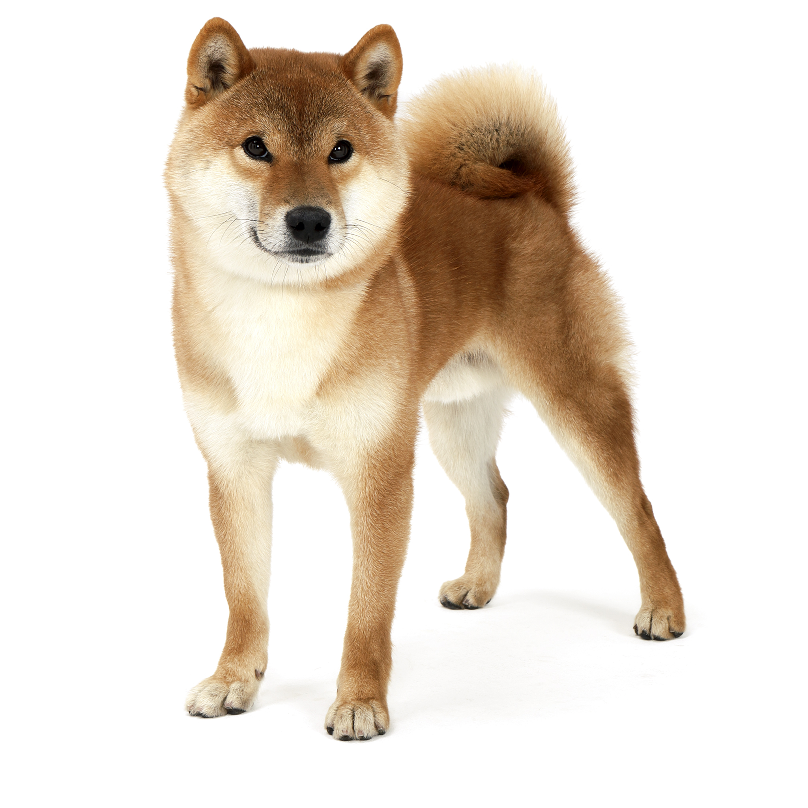

Как вы уже поняли, меня зовут Дима. Я явился в этот мир неожиданно ночью с 23 декабря на 24 декабря, пока мои родители спали. Живу в Москве со своей сестрой, родителями и собакой. Её зовут Умка, и её порода называется сиба-ину. Родом порода из Японии, но Умка родилась в России. Шрифтом, которым я сейчас печатаю - мой любимый) Любимый цвет - голубой. Обожаю роллы, пасту и пиццу. Любимый фильм - пока не знаю) Раньше был "Гарри Поттер", но когда я посмотрел первые 3 части "Пиратов Карибского моря", я засомневался... Я сейчас печатаю на общей клавиатуре, на общей компьютере с общей мышкой, т.к. нахожусь в лагере на направоении Веб-разработка. Сегодня мы научились выкладывать сайты в интернет, поэтому вы сейчас читаете эту фразу) Я живу в 6 отряде в трёхместной комнате с Барановым Ваней (которого мы называем бараном или просто по фамилии) и с Емельянцевым Андреем (которого мы называем Андреем) . На данный момент я - капитан отряда и у меня есть много привилегий. Например, меня никто не слушает, не слышит и т.д.
Вот порода сиба-ину.Я в принципе всё сказал, когда приеду домой, доделаю этот сайт) Всем пока